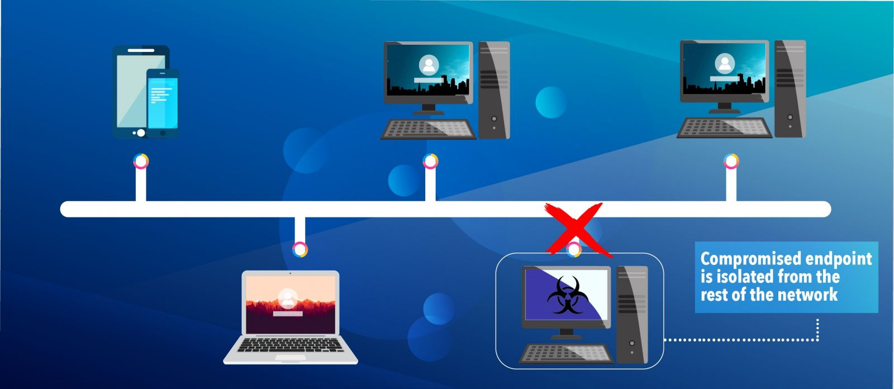

Module 2: Computer Security
2.3.2 Containment Strategies

Once a cybersecurity breach is detected, containing the incident quickly is crucial to business operations. This involves taking steps to limit the spread of a security breach and securing your systems to prevent further damage. Effective containment saves resources and protects sensitive data by isolating affected areas and preventing the breach from spreading.
Containment Techniques:
- Immediate Actions (Short-term Containment):
Quickly isolate infected machines from the network to stop the spread of malware.
Temporarily deactivate accounts that have been compromised to prevent unauthorized access. - Strategic Actions (Long-term Containment):
Patch vulnerabilities and update software to close off exploits used by attackers.
Implement more stringent access controls, including multi-factor authentication, to enhance security after the breach.
Planning for Containment:
- Develop a Containment Plan:
Have a clear, predefined plan, such as standard operating procedures, that outlines specific steps for various types of breaches. - Role-Based Responsibilities:
Assign and train team members on their roles during a containment effort to ensure quick and effective action.
Tools and Resources:
- Use Security Tools:
Leverage tools like intrusion detection systems (IDS) and security information and event management (SIEM) systems to monitor for signs of lateral movement or further breaches. - Engage with Cybersecurity Experts:
Know who your firm's cybersecurity experts are or consider consulting with external cybersecurity experts to assist in managing complex breaches.
Evaluation and Adjustment:
- Monitor Effectiveness:
Continuously monitor the containment measures for effectiveness and adjust as necessary. - Feedback Loop:
Incorporate lessons learned from past incidents into the containment plan to improve response in future scenarios.